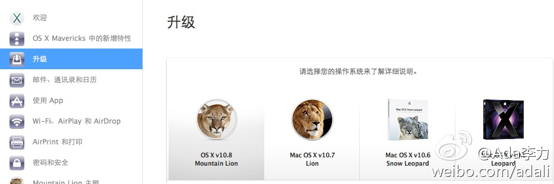

//@ZoomQuiet:#图样图森破# 没有调查不能乱猜的哪,,,Apple - 将你的 Mac 升级到 OS X Mavericks 网页链接 你嘦升到 10.6 就可以直接免费升级到10.9 的,俺就从10.7 跳升的! 不过, 10.5 时代的硬件可以丢了,卖个 Air 13' 的吧...@Ada李力:Mac OS最新版本Mavericks免费了，但也别高兴得太早。我的笔记本是10.5, 得先升到10.6, 然后10.6升到10.7, 10.7升到10.8, 10.8后才能享受到免费得Mac OS版本，之前的升级都要给apple缴费。 